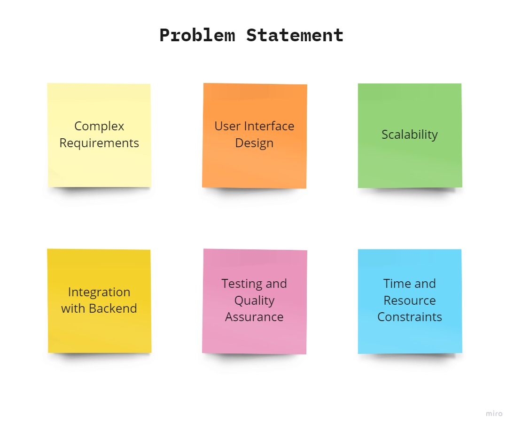
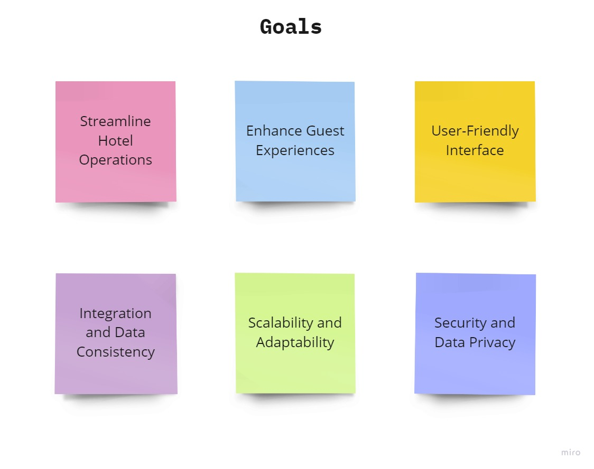
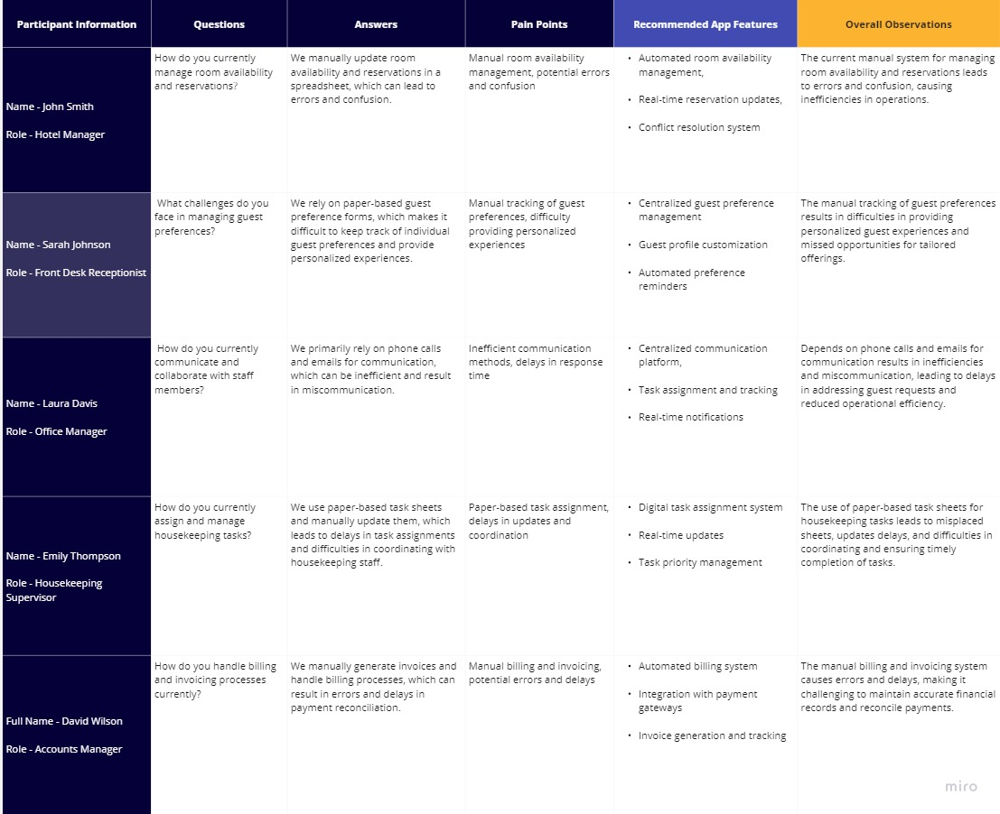
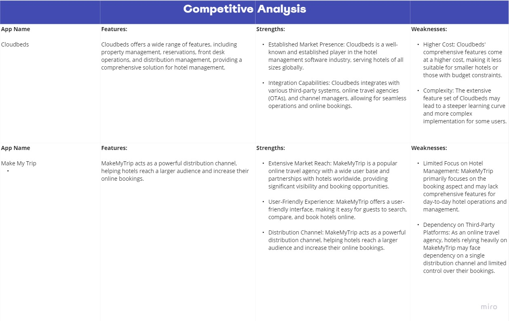
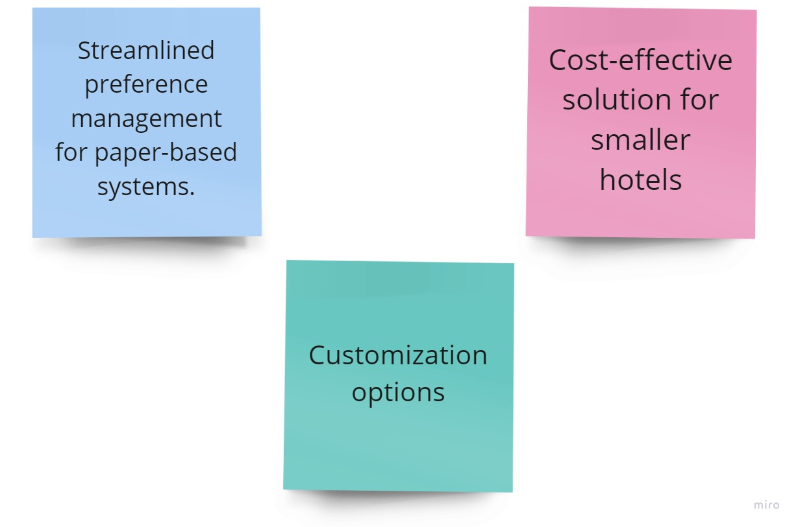
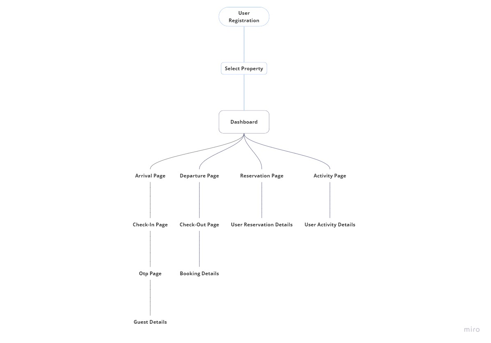
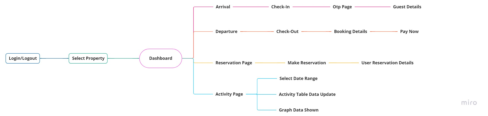
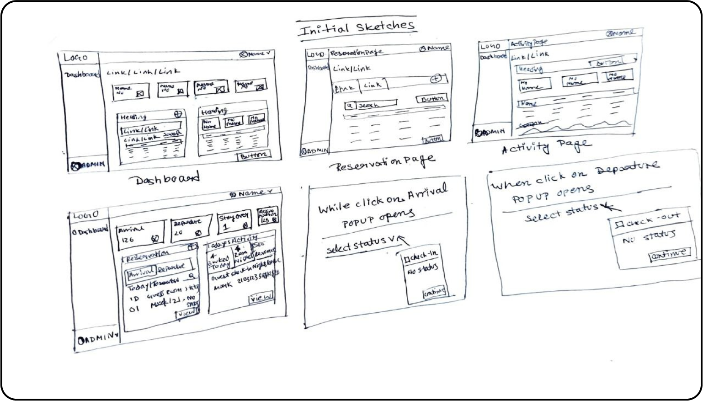
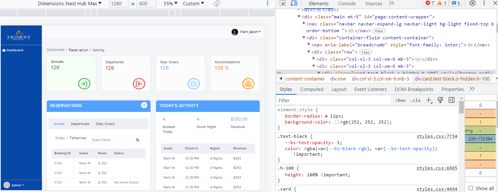
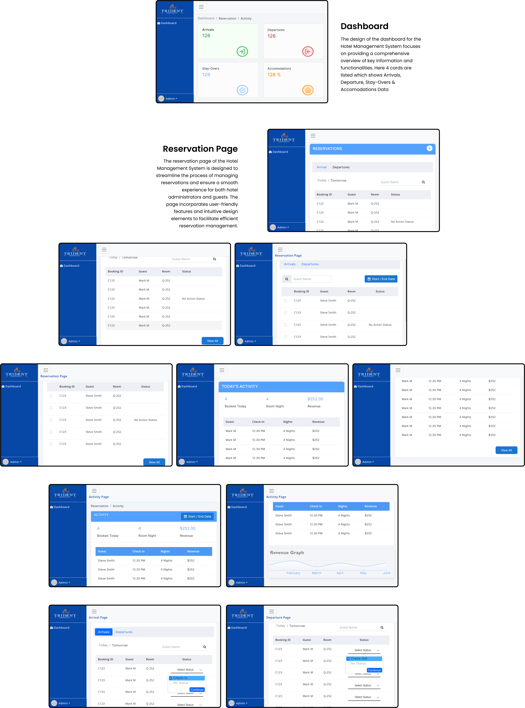

Brief
As a frontend developer intern at Adevu, I played a key role in developing a Hotel Management System from scratch. My responsibilities included designing using Figma and developing the UI using HTML, CSS, and JavaScript. I collaborated closely with a diverse team consisting of a product manager, developers, testers, and other designers. This collaborative effort allowed me to leverage the collective expertise and perspectives of each team member. Further I have implemented a responsive UI. To enhance scalability and code reusability, team decided to transition to React.js. The result was a robust and user-friendly HMS that streamlined hotel operations and improved guest experiences. Adevu's goal was to provide hotel administrators with a comprehensive solution to streamline operations and enhance guest satisfaction.
Problems
- Complex Requirements: Gathering and understanding the complex requirements of hotel administrators proved to be a challenge. Different hotels had varying processes and specific needs, requiring extensive research and collaboration to ensure the HMS addressed their unique requirements.
- User Interface Design: Designing a user-friendly and intuitive interface for the HMS posed challenges. Balancing aesthetics, functionality, and usability while considering the diverse needs of hotel administrators required iterative design processes and feedback from clients.
- Scalability: As the project progressed, we realized that the initial tech stack of HTML, CSS, and JavaScript might not provide the desired scalability for the HMS. This prompted us to transition to React.js, which required additional learning and adaptation to ensure a seamless integration and maintain scalability as the system grew.
- Integration with Backend: Coordinating with the backend development team to integrate the frontend with the server-side logic and database presented challenges. Ensuring smooth communication and synchronizing the development efforts between the frontend and backend teams required close collaboration and coordination.
- Testing and Quality Assurance: Conducting thorough testing and quality assurance to identify and address any issues or bugs proved to be a demanding task. Ensuring the stability, reliability, and security of the HMS required a comprehensive testing strategy and collaboration with testers to ensure comprehensive coverage.
- Time and Resource Constraints: Developing the HMS from scratch within limited time and resources presented challenges in managing priorities, scope, and ensuring timely delivery. Effective project management and close collaboration with team members were crucial to overcome these constraints.

Goals
- Streamline Hotel Operations: The HMS aimed to provide hotel administrators with a comprehensive solution to streamline various aspects of hotel operations. This included managing room reservations, guest check-ins and check-outs, housekeeping tasks, inventory management, billing, and reporting. The goal was to automate manual processes, increase efficiency, and reduce errors in hotel management.
- Enhance Guest Experiences: Another key objective of the HMS was to improve guest experiences by offering a seamless and personalized service. The system aimed to enable smooth check-ins, provide real-time room availability information, and facilitate personalized guest interactions. The goal was to enhance guest satisfaction, loyalty, and overall reputation for the hotel.
- User-Friendly Interface: Developing a user-friendly interface was a crucial goal. The HMS aimed to provide a intuitive and visually appealing user interface (UI) that was easy to navigate and use. By ensuring a user-friendly experience, hotel administrators could quickly adapt to the system, reducing training time and improving productivity.
- Integration and Data Consistency: The HMS integrated with the hotel's existing systems, including the Property Management System (PMS) and payment gateways, to ensure data consistency and accuracy. This created a centralized platform that seamlessly exchanged information and eliminated data silos. The goal was to maximize operational efficiency and provide a unified system for managing hotel operations effectively.
- Scalability and Adaptability: The system aimed to be scalable and adaptable to accommodate the growing needs of hotels of different sizes and types. It aimed to handle a high volume of transactions, support multiple properties, and easily adapt to evolving business requirements. The goal was to provide a future-proof solution that could grow alongside the hotel's operations.
- Security and Data Privacy: The HMS prioritized the security and privacy of hotel and guest data. The system aimed to implement robust security measures to protect sensitive information, including secure user authentication, data encryption, and access controls. The goal was to instill confidence in hotel administrators and guests regarding the protection of their data.

User Research
User research was conducted during the development of the Hotel Management System (HMS) to gain a deep understanding of the needs and pain points of the target users. This research helped to gather insights into areas such as room availability management, guest preferences, housekeeping operations, billing processes, and communication. By understanding the users' pain points and requirements, i could ensure that the HMS was designed and developed to effectively address these needs and provide a user-friendly solution that meets clients expectations.

Note:
Certainly! In the case of larger hotels like Taj and Radisson, they often have more advanced systems in place for managing guest preferences.
While some hotels may still rely on paper-based guest preference forms, it is important to note that Adevu's current focus for the Hotel Management System is on those hotels specifically. The aim is to provide a digital solution that replaces manual processes and streamlines guest preference management for hotels using paper-based systems. This targeted approach ensures that Adevu can effectively address the unique needs of these hotels and provide them with a more efficient and organized way to manage guest preferences.
Competitive Analysis
The competitive analysis assesses the strengths and weaknesses of key players in the hms industry. By evaluating competitors such as Cloudbeds and MakeMyTrip, we gain valuable insights into their offerings, features, and market positioning. This analysis helps Adevu identify opportunities for differentiation and understand the competitive landscape, enabling them to position their Hotel Management System effectively.

Adevu's HMS Competitive Advantage
After the Competitive Analysis, by highlighting these options Adevu can position itself as a provider of choice in the hotel management industry. This strategic approach will help attract the target audience and establish Adevu's HMS as a valuable and relevant solution in the market.

Ideation
During the ideation phase, The primary objective was to create an innovative solution that would address the challenges faced by hotels relying on paper-based guest preference systems.
Here listed some key features:
- Centralized Preference Management: Adevu envisioned a centralized database to store and manage guest preferences, allowing hotels to access and utilize this information efficiently.
- Automated Notifications: Adevu proposed automated notifications to inform hotel staff about guest preferences, ensuring personalized services and improved guest experiences.
- Seamless Integration: The HMS aimed to seamlessly integrate with existing hotel systems, such as property management systems and payment gateways, for efficient data exchange and streamlined operations.
- Scalability and Flexibility: Adevu focused on creating a scalable and flexible system that could adapt to the evolving needs of hotels, accommodating growth and changes in the industry.
After the ideation phase, the proposed features of the Hotel Management System were approved by the team and clients. However, considering the time constraints, the focus shifted towards creating the sitemap, user flow, wireframe, and UI design process. As i am responsible for both design and frontend development, this approach allowed for a streamlined workflow.
The main objective was to deliver a well-structured website that fulfilled the project requirements within the given timeframe. This decision optimized time management and ensured steady progress towards achieving the final product.
Sitemap
Creating a sitemap for the Hotel Management System provides a visual representation of the hierarchical structure, showcasing the main sections and their respective sub-sections. It helps in understanding the navigation flow and relationships between different pages and functionalities within the system.

User Flow
Due to confidentiality reasons, I am unable to provide the complete structure of the Hotel Management System. However, I have added the general flow from the Dashboard to the Arrival, Departure, Reservstion and Activity sections.

Wireframes
The wireframes for the Hotel Management System provide a visual representation of the layout and structure of the user interface. These wireframes outline the key elements and functionalities of the system, showcasing the placement of various components and the flow of information.

Frontend Development
After careful consideration, the development team and I made a collective decision to utilize HTML, CSS, and JavaScript as the tech stack for the initial frontend development of the HMS project. This choice allowed us to quickly prototype and develop the user interface with the core web technologies.
As the project progressed and the system's complexity increased, we recognized the need for a more scalable and maintainable solution. After six months, we made the strategic decision to transition to React.js, a popular JavaScript library for building user interfaces. This transition allowed us to leverage React's component-based architecture, state management capabilities, and ecosystem of reusable libraries, enabling faster development and better code organization.
By incorporating React.js into the tech stack, we aimed to enhance the system's performance, modularity, and overall development efficiency. This transition not only improved the development experience but also positioned the HMS for future scalability and extensibility.

UI Screens
The UI screens of the Hotel Management System provide a visual representation of the different interfaces and functionalities within the system. These screens showcase the design and layout of various pages and components, allowing users to interact with the system effectively.

Prototype
Impact
The website's performance and design have garnered satisfaction from both clients and the team, showcasing the successful implementation of design & frontend development. The high performance, combined with an user friendly design, delivering a seamless and delightful user experience.
Reflection
Being a part in the development of the Hotel Management System has been a rewarding experience. From designing and developing the UI to transitioning to React.js, our team has overcome challenges and achieved significant milestones. User research played a crucial role in shaping our decisions, and the satisfaction expressed by clients and the team validates our efforts. Looking ahead, I am excited about the future impact of the HMS and the lessons learned from this project. It has been a fulfilling journey, and I am proud of our accomplishments as a team.